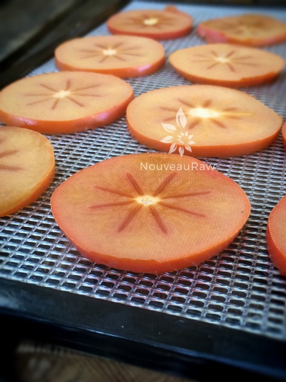
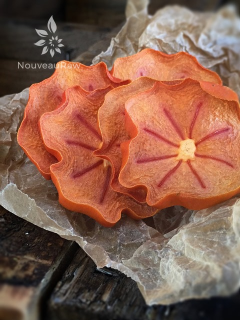

Dehydrated Persimmons
Dried Fuyu Persimmons

~ raw, dehydrated ~
I have learned a lot about persimmons through my experimentation with them. For starters did you know that persimmons are classified as a berry?
Also, as I was slicing the persimmons on the mandolin to make thin slices, I noticed that only two out of six of my persimmons had seeds. How is it that only two had seeds? One had two seeds and the other had four, this caused me to explore Google land.
In short, those with seeds have been pollinated, those without… well… haven’t. They can grow without being pollinated but are then considered sterile. To be honest, after slicing 3 of them and never seeing a seed… when I finally did, I sort of jumped. I thought it was a bug that had burrowed down into the fruit. hehe Just goes to show that there is always things to learn!
For this “recipe” I used the Fuyu Persimmon. It is short and firm. They’re crisp and sweet and the skin can be eaten or peeled. If it is soft and mushy feeling, skip using for dehydrating and make a wonderful, Raw Pumpkin Spiced Persimmon Pudding. To learn a bit more about fresh persimmons, click (here). Enjoy!
Ingredients:
- Persimmons (ripe but still firm)
Preparation:
- Place the slices on the mesh sheet that comes with the dehydrator in a single layer.
- If possible, use a mandolin for slices the persimmons.
- Even cuts will ensure that they all dehydrate at the same time. I used the 1.5 mm slicing blade.
- Slice down to the pits, flip to other side and slice again down to the pit.
- You will have two chunks on each side left over. Cut off and dehydrate or eat as a snack for all your hard work. :)
- Don’t use mushy or bruised persimmons, those would be best for creating puddings with.
- Thick or thin slices – the thinner the slice, the quicker the dry time will be.
- Humidity – the higher the humidity in the room air, the longer the dry time will be.
- Water content – the higher the water content in the plum, the longer it will take to dry.
- Dehydrate at 145 degrees for 1 hour, then reduce to 115 degrees (F) for about 6 hours or until dry.
- Store in airtight containers at room temperature for up to several months. If there is a lot of moisture left in them, keep them stored in the fridge.
Culinary Explanations:
- Why do I start the dehydrator at 145 degrees (F)? Click (here) to learn the reason behind this.
- When working with fresh ingredients it is important to taste test as you build a recipe. Learn why (here).
- Don’t own a dehydrator? Learn how to use your oven (here). I do however truly believe that it is a worthwhile investment. Click (here) to learn what I use.

I love how they natural curled during the drying process. Truly beautiful.

© AmieSue.com